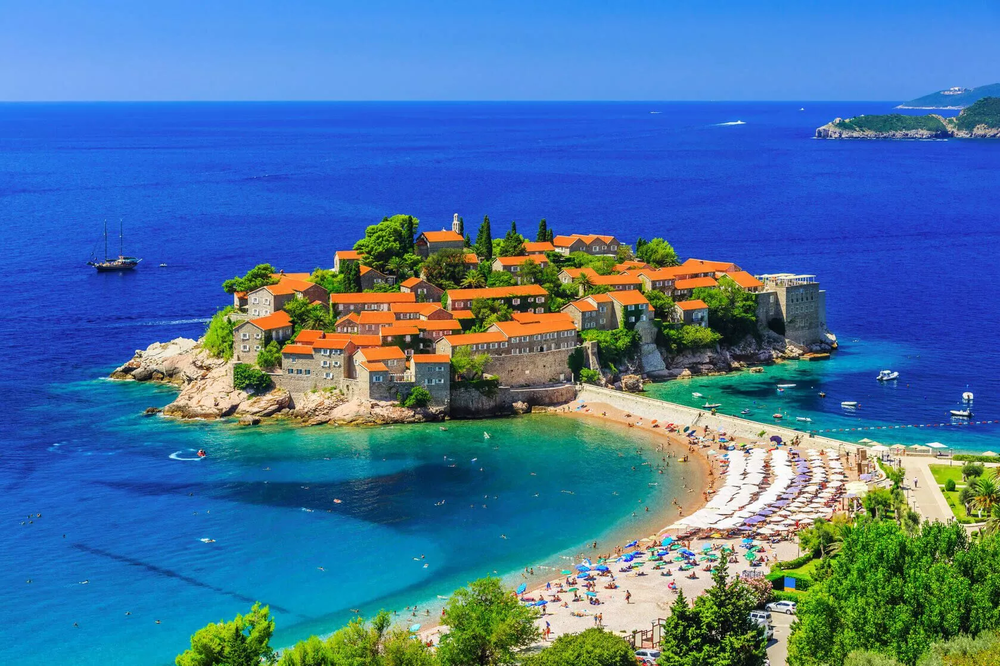

🌊
Jadransko more
Čisto more i prijatna mediteranska klima čine Budvu privlačnim mestom za letnji odmor i opuštanje.
DOBRODOŠLI
Budva je jedan od najpoznatijih gradova na crnogorskom primorju i mesto koje spaja prirodne lepote, bogatu istoriju i savremeni turistički život.
Posebnu atmosferu daju joj Jadransko more, brojne plaže, kamene ulice Starog grada i pogled na obalu koji je karakterističan za ovaj deo Crne Gore.

DOŽIVLJAJ
Čisto more i prijatna mediteranska klima čine Budvu privlačnim mestom za letnji odmor i opuštanje.
U okolini Budve nalazi se veliki broj plaža, od gradskih do skrivenijih uvala sa pogledom na more.
Kamene ulice, trgovi i istorijske građevine daju Starom gradu poseban karakter i atmosferu.
PREPORUČENA MESTA
Istorijsko jezgro grada, poznato po kamenim ulicama i zidinama.
Jedna od poznatijih plaža u blizini Starog grada.
Duga gradska plaža uz koju se pruža šetalište.
Istorijska tvrđava u Starom gradu sa pogledom prema moru.
Prijatno mesto za večernju šetnju i uživanje u pogledu na obalu.
Ostrvo u neposrednoj blizini Budve koje upotpunjuje panoramu zaliva.
DA LI STE ZNALI?
Budva ima dugu istoriju i jedno je od najpoznatijih turističkih mesta na crnogorskoj obali. Njeno staro gradsko jezgro okruženo je kamenim zidinama i predstavlja jedan od prepoznatljivih simbola grada.
U neposrednoj blizini nalazi se ostrvo Sveti Nikola, dok su među poznatim plažama u okolini Mogren, Jaz i Slovenska plaža.
More
sunce
i odmor
LIČNI UTISAK
„Budva je za mene posebno mesto jer na jednom mestu pruža mogućnost za odmor, uživanje u prirodi i kvalitetno vreme provedeno sa porodicom i prijateljima.“
— Moja omiljena lokacija